먼저 생각해 보세요.
방금 들은 문장에서 Schere 앞에는 ein이 아니라 eine가 왔어요. 왜 그럴까요?
독일어 명사는 남성, 여성, 중성으로 나뉘어요. 이 과에서 배워요.
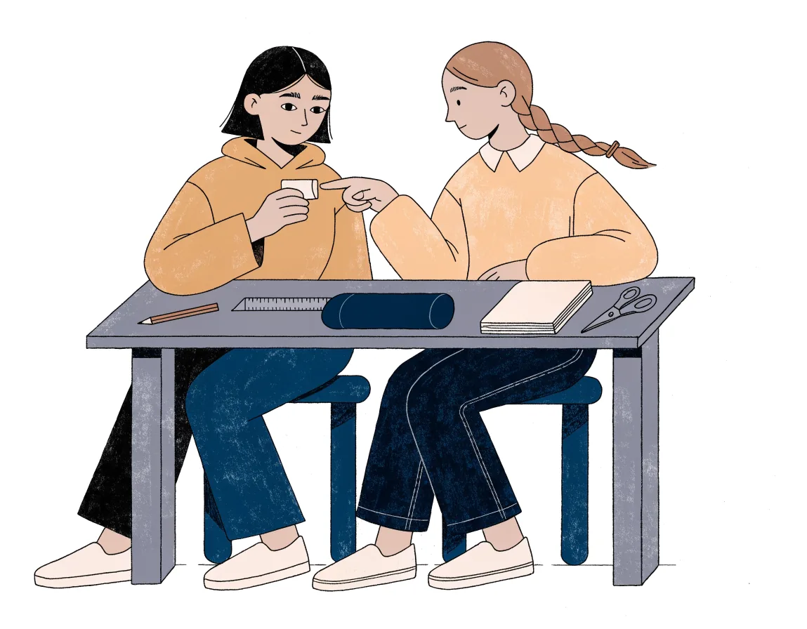
독일어 수업이 곧 시작해요. Yuna는 책상 위에 있는 물건들의 독일어 이름이 궁금해요.
눌러서 들어 보세요.
먼저 생각해 보세요.
방금 들은 문장에서 Schere 앞에는 ein이 아니라 eine가 왔어요. 왜 그럴까요?
독일어 명사는 남성, 여성, 중성으로 나뉘어요. 이 과에서 배워요.
Lektion 2의 낱말 다섯 개를 다시 떠올려 보세요.
문법 der, die, das, ein, eine, kein, keine (Nominativ), Plural
이 과를 마치면 내 가방 속 물건을 독일어로 소개할 수 있어요.
수업이 시작하기 전이에요. Yuna가 책상 위 물건을 하나씩 가리키며 물어요.
들으면서 찾아보세요. Yuna가 볼펜이라고 생각한 물건은 사실 무엇이었나요?
독일어 수업 시간이에요. Frau Schneider가 반 학생들에게 말해요.
들으면서 찾아보세요. 책을 몇 쪽에 펴야 하나요?
두 대화를 듣고 답하세요.
Emma: „Das ist ein Kuli.“
Emma는 Das ist kein Kuli라고 했어요. 그 물건은 연필(Bleistift)이었어요.
Yuna: „Ich verstehe das nicht.“
Elif: „Hier ist ein Stift.“
Frau Schneider는 책을 몇 쪽에 펴라고 했나요?
Lukas가 찾고 있는 것은 무엇인가요?
물건의 독일어 이름을 모를 때 Yuna는 어떻게 물었나요?
낱말 22개예요. 낱말이나 예문 앞의 단추를 누르면 소리가 나요. 명사는 der, die, das를 색으로 구분했어요.
der Stift, die Stifte 펜, 필기구
Wo ist mein Stift?내 펜이 어디 있지?
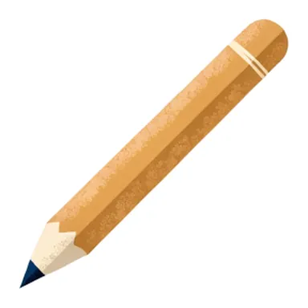
der Bleistift, die Bleistifte 연필
Das ist ein Bleistift.그건 연필이에요.
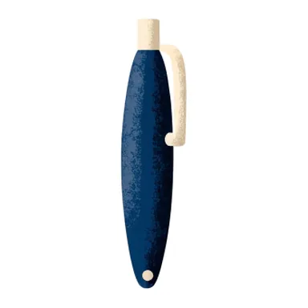
der Kuli, die Kulis 볼펜
Ist das ein Kuli?그거 볼펜이에요?
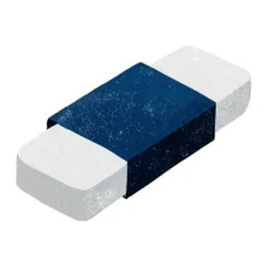
der Radiergummi, die Radiergummis 지우개
Der Radiergummi ist neu.그 지우개는 새것이에요.
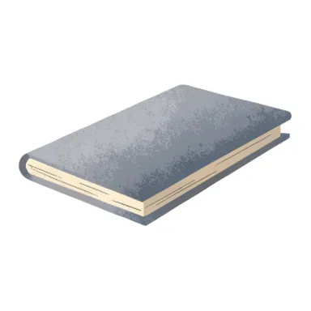
das Heft, die Hefte 공책
Das Heft ist hier.공책은 여기 있어요.
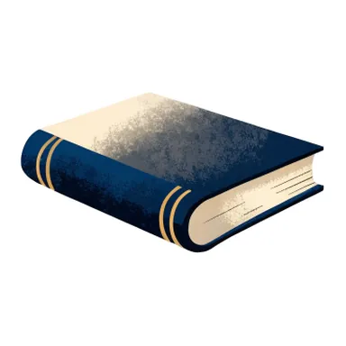
das Buch, die Bücher 책
Das ist kein Heft. Das ist ein Buch.그건 공책이 아니에요. 책이에요.
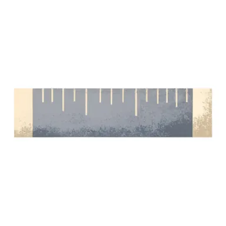
das Lineal, die Lineale 자
Hier ist ein Lineal.여기 자가 있어요.
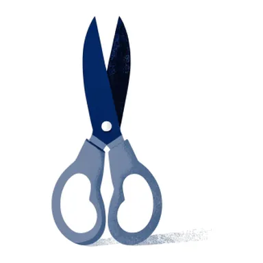
die Schere, die Scheren 가위
Das ist eine Schere.그건 가위예요.
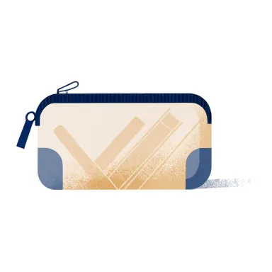
das Mäppchen, die Mäppchen 필통
Das Mäppchen ist neu.그 필통은 새것이에요.
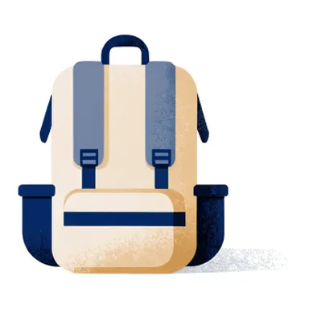
die Tasche, die Taschen 가방
Wo ist die Tasche?가방이 어디 있어요?
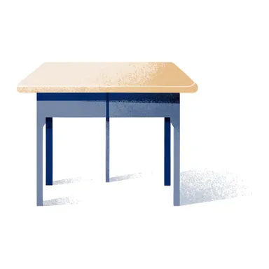
der Tisch, die Tische 책상, 탁자
Das ist mein Tisch.이건 내 책상이에요.
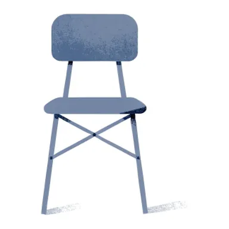
der Stuhl, die Stühle 의자
Hier ist ein Stuhl.여기 의자가 있어요.
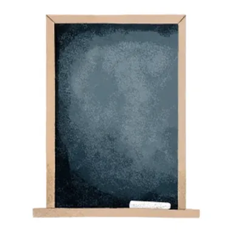
die Tafel, die Tafeln 칠판
Das ist die Tafel.이건 칠판이에요.
das Fenster, die Fenster 창문
Das ist ein Fenster.그건 창문이에요.
die Tür, die Türen 문
Wo ist die Tür?문이 어디 있어요?
die Seite, die Seiten 쪽, 페이지
Seite zwölf, bitte.12쪽을 펴 주세요.
Was ist das? 이게 뭐예요?
Was ist das? Das ist ein Heft.이게 뭐예요? 그건 공책이에요.
Wie heißt das auf Deutsch? 이건 독일어로 뭐라고 해요?
Entschuldigung, wie heißt das auf Deutsch?실례지만, 이건 독일어로 뭐라고 해요?
Ich verstehe das nicht. 이해하지 못했어요.
Entschuldigung, ich verstehe das nicht.죄송해요, 이해하지 못했어요.
Noch einmal, bitte. 한 번 더 부탁해요.
Wie bitte? Noch einmal, bitte.뭐라고요? 한 번 더 말해 주세요.
hier 여기
Hier ist ein Stift.여기 펜이 있어요.
Entschuldigung! 실례합니다!, 죄송해요!
Entschuldigung, Frau Schneider!죄송해요, Frau Schneider!
이 과의 낱말로 여덟 문제를 풀어요.
예문을 보고 답해 보세요.
Heft 앞에는 무엇이 붙었나요?
규칙
독일어 명사는 남성(der), 여성(die), 중성(das) 가운데 하나예요. 뜻만 보고는 알 수 없는 낱말이 많아서 처음부터 관사와 함께 외워요. 명사는 문장 어디에 있든 첫 글자를 대문자로 써요.
| der 남성 | die 여성 | das 중성 |
|---|---|---|
| der Stift | die Schere | das Heft |
| der Tisch | die Tafel | das Buch |
| der Stuhl | die Tür | das Fenster |
주의 사람은 대개 실제 성별을 따라요. der Lehrer, die Lehrerin처럼요. 하지만 das Mädchen은 중성이에요. -chen으로 끝나는 낱말은 언제나 das이기 때문이에요. das Mäppchen도 그래요.
예문을 보고 답해 보세요.
die Schere 앞에는 ein과 eine 가운데 무엇을 쓰나요?
규칙
처음 말하는 물건에는 ein, eine를 써요. der와 das 명사에는 ein, die 명사에는 eine예요. '~이 아니다'라고 할 때는 앞에 k를 붙여 kein, keine라고 해요.
| der | das | die | |
|---|---|---|---|
| 하나의 ~ | ein Stift | ein Heft | eine Schere |
| ~이 아닌 | kein Stift | kein Heft | keine Schere |
주의 처음 말할 때는 ein, eine를 쓰고, 그 물건을 다시 말할 때는 der, die, das를 써요. Das ist ein Heft. Das Heft ist neu.
예문을 보고 답해 보세요.
die Stifte, die Bücher, die Scheren. 복수형 앞에 붙는 관사는 무엇인가요?
규칙
복수형을 만드는 방법은 낱말마다 달라요. 그래서 낱말을 외울 때 복수형도 함께 외워요. 복수형의 관사는 언제나 die예요.
| 붙는 끝 | 단수 | 복수 |
|---|---|---|
| -e | der Stift | die Stifte |
| -n, -en | die Schere | die Scheren |
| -er, 움라우트 | das Buch | die Bücher |
| -s | der Kuli | die Kulis |
| 그대로 | das Fenster | die Fenster |
주의 한국어는 '책 두 권'처럼 명사의 모양이 그대로지만, 독일어는 zwei Bücher처럼 꼭 복수형으로 바꿔요.
선생님의 말을 듣고 무엇을 해야 하는지 고르세요.
무엇을 해야 하나요?
Öffnet bitte das Buch.
무엇을 해야 하나요?
Hört bitte zu.
무엇을 해야 하나요?
Sprecht bitte nach.
무엇을 해야 하나요?
Noch einmal, bitte.
듣고 어떤 물건인지 고르세요.
무엇인가요?
Das ist eine Tasche.
무엇인가요?
Das ist kein Heft. Das ist ein Buch.
무엇이 있나요?
Hier sind zwei Bleistifte.
알맞은 관사를 고르세요.
Stift
Schere
Heft
Tisch
Tafel
Buch
Tür
Mäppchen
Stuhl
Fenster
ein, eine, kein, keine 가운데 알맞은 말을 고르세요.
Das ist Heft.
Das ist Schere.
Ist das Kuli?
Nein, das ist Kuli.
Das ist Tasche. Das ist ein Mäppchen.
Hier ist Lineal.
복수형을 쓰세요.
ein Stift, zwei
ein Buch, zwei
eine Schere, zwei
ein Kuli, zwei
ein Heft, zwei
ein Stuhl, zwei
Yuna가 쓴 메모를 읽고 답하세요.
Meine Tasche
In der Tasche: zwei Hefte, ein Buch, ein Mäppchen.
Im Mäppchen: drei Bleistifte, ein Kuli, ein Radiergummi, eine Schere.
Kein Lineal!
가방 안에 책은 몇 권 있나요?
필통 안에 연필은 몇 자루 있나요?
Yuna에게 없는 물건은 무엇인가요?
Im Mäppchen ist eine Schere.
낱말을 순서대로 눌러 문장을 만드세요.
그건 연필이에요.
그거 볼펜이에요?
그건 공책이 아니에요.
이건 독일어로 뭐라고 해요?
듣고 그대로 써 보세요.
Was ist das? 이게 뭐야?
Das ist eine Schere. 그건 가위야.
Noch einmal, bitte. 한 번 더 부탁해요.
Was ist das? 이게 뭐예요?
Wie heißt das auf Deutsch? 이건 독일어로 뭐라고 해요?
Das ist ein … / Das ist eine … 그건 …예요.
Das ist kein … / Das ist keine … 그건 …이 아니에요.
Ich verstehe das nicht. 이해하지 못했어요.
Noch einmal, bitte. 한 번 더 부탁해요.
Wie schreibt man das? 그거 어떻게 써요?
대화 A에서 역할을 하나 고르세요. 상대의 말은 음성으로 나오고, 내 차례에는 직접 말해요.
내 가방이나 필통에 있는 물건 세 가지를 ein이나 eine와 함께 적으세요. 완성된 문장을 소리 내어 읽어 보세요.
Das ist meine Tasche.
Hier ist ein Heft.
Hier ist eine Schere.
Und das ist ein Kuli.
In meiner Tasche
내 가방이나 필통에 있는 물건을 네 가지쯤 써 보세요. 없는 물건도 kein이나 keine로 하나 써요.
Das ist meine Tasche. Hier ist ein Heft. Hier ist ein Buch. Und das ist ein Mäppchen. Hier ist eine Schere. Das ist kein Kuli, das ist ein Bleistift.
다 쓴 뒤에 확인해 보세요.
Ich kann nach Dingen fragen.물건의 이름을 묻고 답할 수 있어요.
Ich kann ein, eine und kein, keine benutzen.ein, eine와 kein, keine를 알맞게 쓸 수 있어요.
Ich kann sagen: Ich verstehe das nicht.수업 시간에 모르는 것을 독일어로 말할 수 있어요.